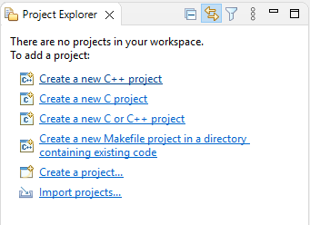
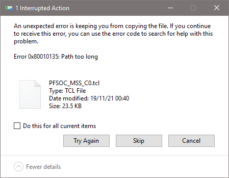

Projects¶
Bundled example projects¶
Details about bundled examples are in the Example projects section inside the Workspace chapter.
Importing projects¶
Metadata and project files¶
SoftConsole has a separate concept of metadata and project files which might look intimidating to first-time users.
The project files hold the source code of the project and the project settings (such as the target CPU, Debug/Release configurations and other settings). These are often part of the workspace, but sometimes can be placed in different locations and the workspace metadata references the files. This means when opening the workspace from SoftConsole the files will be presented as they are inside the workspace, but physically going into the workspace folder with OS’s tools such as File Explorer will show that the files are not there.
The project metadata holds additional information about a project, such as indexes which understand the project’s structure and allow features such as Refactoring to work. Metadata is always stored inside the workspace folder.
The principle of this separation has many advantages, but it might be confusing for new users and cause various problems if not understood fully.
Problem 1: The user can copy files into the workspace when importing the project, but not delete the files when deleting the project. SoftConsole will present the workspace without the project, but opening the physical location of the workspace in File Explorer will show the project files still present. Trying to import a new project with the same name will fail because it still physically exists in the workspace, even when the metadata is gone.
Problem 2: Importing a project from a shared networked location, not copying it into the workspace, will cause each edit to be written into the shared location. When deleting the project the deletion of the project files, will not just delete the metadata from the local workspace but delete the project files from the shared location.
It’s up to the user to decide what is needed, but here are some recommendations on what to do and when:
Importing from an existing project on the file system. It’s recommended to check the
Copy projects into workspace?when importing. This will keep the project files together with the metadata inside the workspace. When deleting the project it’s recommended to checkDelete project contents on disk (cannot be undone), which will remove both metadata and project files.Importing from a zip. The option is forced and does the
Copy projects into workspace?when importing. This will keep the project files together with the metadata inside the workspace. When deleting the project it’s recommended to checkDelete project contents on disk (cannot be undone), which will remove both metadata and project files.Importing from git. There will be no option for the
Copy projects into workspace?when importing from git. This will make the files to live inside the cloned destination, most likely<SC_INSTALL_DIR>/extras/home/<REPOSITORY_NAME>while the project’s metadata will be inside the workspace. When deleting the project it’s recommended to uncheckDelete project contents on disk (cannot be undone), which will remove the metadata from the workspace, but will leave the files in the cloned repository intact.
Importing general projects¶
Any one of the following steps will reach the import dialog for general project which is just a folder on the file system or a zipped archive of the project:
If it’s an empty workspace then
Import projects...is accessible directly from the workspace:
Use the option Select root directory when importing a project located directly on a file system, or use Select archive file if the project is in a zip archive.
The rest of dialog options should be safe, the default settings in most cases are fine and can be accepted with Finish button.
Note
In some cases, the dialog allows importing the projects without copying the project files (this option is not possible when importing from a zip and not possible with git import). By default, the Copy projects into workspace is checked, which is considered the safe option. Unchecking the Copy projects into workspace manually will mean that the project metadata will be included in the workspace, but physically their source files and project files will be kept in the original location, which might have undesired implications. This depends on the use-case, but in most cases it’s desired to have the Copy projects into workspace checked, then both the project’s metadata and project’s files are kept together in the same workspace folder.
Unable to import a project¶
There are many scenarios when importing a project is not allowed and that depends if there are metadata or project files inside the workspace which have the same name. Possible scenarios:
| Metadata | Project files | Visible in SoftConsole | Importing a project with the same name |
|---|---|---|---|
| not present | not in the workspace | No | Allowed |
| present | not in the workspace | Yes, but without sources | No |
| present | not in the referenced location | Yes, but without sources | No |
| not present | inside the workspace | No | No |
| present | inside the workspace | Yes | No |
If it’s not possible to continue with the import then the likely cause is that there is an existing project under the same name. If the project was deleted previously then it might be caused by the metadata being deleted, but not deleting the project files (and the source code) from the repository. To resolve this issue it’s possible to delete the project files manually from the workspace with a file explorer. However, it’s safer to just start a new workspace. It’s better to avoid the issue altogether instead of trying to fix it, when deleting a project which is copied into the workspace then it’s usually desired to delete the project files together with the metadata. Make sure Delete project contents on disk (cannot be undone) is checked when deleting the project:

Double check if it’s the right project and if it’s the one which needs to be deleted as this action cannot be undone.
When deleting a project which is referencing the files outside the workspace, then it might be desired to have Delete project contents on disk (cannot be undone) checkbox unchecked. For example, a project which didn’t have Copy projects into workspace checked when it was imported, or when importing a git project.
Note
The decisions when importing projects and deleting them have implications, take extra care to make sure you select the options right for the current project.
Importing Git projects - First-time users¶
Common Microchip repositories with examples targeting PolarFire SoC and Mi-V soft processors are:
https://github.com/polarfire-soc/polarfire-soc-bare-metal-libraryhttps://github.com/Mi-V-Soft-RISC-V/miv-rv32-bare-metal-examples
Note
If the user will copy the URL into their clipboard before triggering the import dialog, then the wizard will have pre-populated values and for most cases, it’s enough to accept the default values and click Next through the dialog steps until its finished.
For the first time-users one of the following:
The import dialog has the following steps:
Source Git Repository: if the URL was copied into the clipboard before starting the import process then the fields should be pre-populated, clickNext.Branch selection: typically on these two Microchip example repositories there should be only one branch. It’smainbranch formiv-rv32-bare-metal-examplesrepository andmasterbranch forpolarfire-soc-bare-metal-libraryrepository. If there will be more branches in the future, then still select the default main branch unless specifically instructed by Microchip support. ClickNext.Local destination: is a folder where the whole repository will get cloned into, by default the destination is in<SC_INSTALL_DIR>/extras/home/<REPOSITORY_NAME>, for the first time import this location can be used as it is, but for subsequent clones a different destination needs to be used because the destination needs to be unique (can’t clone into a folder which was already populated by the previous clone operation). ClickNext.Select a wizard to use for importing projects: this step will take a while cloning the whole repository with all its projects. Leave it at default settings and clickNext.Import Projects: users can either leave the dialog as is and import all projects, but that might overwhelm the workspace with all the projects and might make navigating the workspace harder as there will be a lot of clutter. The safer option is to clickDeselect Alland then type in the filter fieldtype filter text to filter unselected projectsto search for the desired projects. For example typingcanwill list all examples related to CAN and select only the needed projects. ClickFinishNote
If it’s not possible to finish this the last step? The desired projects are greyed out and can’t be selected? Then it’s likely caused by an existing project in the current workspace which has the same name, or the workspace containing leftover files from a deleted project, read the Unable to import a project section above for more details.
Note
Importing projects from git will not copy the files into the workspace, but reference them to the location where they were cloned into. This has a few implications:
When deleting a project and checking the
Delete project contents on disk (cannot be undone)might delete the project files from the cloned repository.When deleting a project and unchecking the
Delete project contents on disk (cannot be undone)will not remove the project from the cloned repository. However, a subsequent import will not import a fresh/reverted/original version of the project and will contain all the changes made up to the point of deletion.When deleting (or moving) the destination where the project was cloned into will break the imported project. Moving the repository should be avoided and deleting the repository needs to be done with extra care as it will delete the scontent of the imported projects. If the repository is “in use” (some workspace is referencing it by having an imported project from that repository), then it’s recommended to not alter the cloned repository.
Importing Git projects - Subsequent imports¶
After the initial import, the subsequent imports can skip the clone part of the process.
The selection of previously cloned repositories should be displayed:
After selecting the desired repository the process should be similar to step 5 of the previous chapter.
Note
If there is a need to get a newer version of the repository when a newer release is published. Or when needing a vanila/fresh version of a modified project, then it’s good to make a separate clone into a new destination. Cloning into a separate destination is a prefered action as deleting the original repository requires extra care to make sure the repository is not “in use” by any workspace (not just the currently opened one).
Creating a new project¶
Depending on the type of project required select:
![digraph { graph [rankdir="LR", ranksep=.01, bgcolor=transparent]; node [fontname="Verdana", style=filled, fillcolor=white, fontsize="9", shape="rectangle", width=.1, height=.2, margin=".04,.01"]; edge [arrowsize=.7]; "SoftConsole Menu toolbar" -> "File" -> "New" -> "'C Project' or 'C++ Project'"; }](../_images/graphviz-b2ac91da8acb2b55f5d446a1c6590490cce9293f.png)
In the C/C++ Project page of the wizard enter the Project name, select
Select the appropriate toolchain.
For a RISC-V project select Toolchains = RISC-V Cross GCC.
Click
Nextto go to the next wizard page, Select Configurations:The Select Configurations page of the wizard allows the configurations or build targets that the project will support to be configured. By default, two configurations are created – Debug and Release. Should other configurations be required these can be created using the Advanced settings… button which launches the project Properties dialog in which additional configurations can be specified or properties for any or all configurations can be changed. Normally the default Debug and Release configurations are sufficient. When finished click the
Nextbutton to go to the next wizard pageGNU RISC-V Cross Toolchain.The GNU RISC-V Cross Toolchain wizard page specifies the name and path of the toolchain to be used to build the project. These should be correct by default but double check that the values are as follows:
Toolchain name = RISC-V GCC/Newlib (riscv64-unknown-elf-gcc)
Toolchain path = ${eclipse_home}/../riscv-unknown-elf-gcc/bin
Click
Finishto complete the creation of the new project.
Project Settings¶
Most of the project settings default to usable values. However, some project settings must be modified manually depending on the target device/CPU. Use the example projects as a guide to creating new project while bearing in mind that these are just simple functional examples and a real application may benefit from the use of some of the many other configuration options and command line options that the underlying GCC tools support.
To modify the project settings right click on the project in the Project Explorer and select Properties from the context menu. Then navigate to:
Select Configuration = All configurations to configure settings applicable to all build targets (by default Debug and
Release) or else select a specific configuration (e.g. Configuration = Debug or Configuration = Release) to configure
settings applicable only to that build target.
Except where noted the settings below can be configured for all [All Configurations].
All CPU targets¶
Target Processor¶
The characteristics of the target CPU are configured in the:
For RISC-V projects the settings must be configured to match the target CPU characteristics so that the underlying
compiler tools are passed the correct -march=<arch> and -mabi=<abi> options, code is generated in line with
the supported and used extensions and the appropriate multilibs are linked. Note that the RISC-V toolchain defaults
to targeting rv64gc which may not be appropriate for all RISC-V target designs. Architecture and ABI settings affect all platforms, but it’s very important with RISC-V because of all the possible extensions and their possible combinations.
The main options of relevance here are:
Architecture: specifies the base architecture – e.g. RV32* for Mi-V 32-bit soft cores or RV64* for PolarFire SoC 64- bit multi-processor
Multiply extension (RVM): check if the target supports the M (hardware multiply/divide) extension
Atomic extension (RVA): check if the target supports the A extension
Floating point: specifies what hardware floating point extension the target supports
Compressed extension (RVC): check if the target supports the C extension
Integer ABI: specifies the integer ABI to be used – usually set to LP32 (
-mabi=ilp32) for Mi-V or LP64 (-mabi=lp64) for PolarFire SoCFloating point ABI: specifies the floating-point ABI to be used
Code model: specifies the code model to be used
Align: specifies the alignment policy – should be set to Strict (
-mstrict-align) to avoid unaligned memory access exceptions when using the Microsemi (Mi-V) RISC-V Hardware Abstraction Layer (HAL) or PolarFire SoC PSE_HAL and-Osto optimize the program for size
Architecture¶
Architecture is configured with the following settings, it describes what the target HW is capable of:
ABI¶
ABI describes how many and what registers are used and available on the target, which ones are used to pass variable arguments to functions, which one are return variables. Which registers get saved by callee and which one by caller. The ABI can’t use more than the HW is capable of. ABI can be configured with following:
For more information see the SiFive’s blog: https://www.sifive.com/blog/all-aboard-part-1-compiler-args
Multilibs¶
Are build for specific combinations of Architecture and ABI. Because these increase the size of the toolchain, not every combination is supported. Currently supported combinations are:
| march | mabi |
|---|---|
| rv32i | ilp32 |
| rv32ia | ilp32 |
| rv32iac | ilp32 |
| rv32iaf | ilp32f |
| rv32iafc | ilp32f |
| rv32ic | ilp32 |
| rv32if | ilp32f |
| rv32ifc | ilp32f |
| rv32im | ilp32 |
| rv32ima | ilp32 |
| rv32imac | ilp32 |
| rv32imaf | ilp32f |
| rv32imafc | ilp32f |
| rv32imc | ilp32 |
| rv32imf | ilp32f |
| rv32imfc | ilp32f |
| rv64i | lp64 |
| rv64ia | lp64 |
| rv64iac | lp64 |
| rv64iaf | lp64f |
| rv64iafc | lp64f |
| rv64iafd | lp64d |
| rv64iafdc | lp64d |
| rv64ic | lp64 |
| rv64if | lp64f |
| rv64ifc | lp64f |
| rv64ifd | lp64d |
| rv64ifdc | lp64d |
| rv64im | lp64 |
| rv64ima | lp64 |
| rv64imac | lp64 |
| rv64imaf | lp64f |
| rv64imafc | lp64f |
| rv64imafd | lp64d |
| rv64imafdc | lp64d |
| rv64imc | lp64 |
| rv64imf | lp64f |
| rv64imfc | lp64f |
| rv64imfd | lp64d |
| rv64imfdc | lp64d |
Note
Be specific. Avoid using
Toolchain defaultsettings which will revert to RV64GC and on RV32 targets will give obscure errors.Double check if your combincation of Architecture/ABI is supported, if not it will revert to the default (RV64GC) and cause problems.
SoftConsole supports only native ABIs,
RV64IMAFDarchitecture is supporting only the ABI which contains theDextension. However it is possible to change the architecture toRV64IMAFand then theFABI will work. If it’s needed to use some subset of ABI, change the Architecture first. It’s OK to compile for less capable Architecture
Linker Script¶
It is essential that the appropriate linker script is configured for the project. This will often be one of the example linker scripts bundled with the relevant CMSIS/HAL firmware core which has been generated and imported/copied into the project.
![digraph {
graph [rankdir="LR", ranksep=.01, bgcolor=transparent];
node [fontname="Verdana", fontsize="9", shape="rectangle", width=.1, height=.2, margin=".04,.01", style=filled, fillcolor=white];
edge [arrowsize=.7];
"Project Properties" -> "C/C++ Build" -> "Settings" -> "Tool Settings" -> "GNU RISC-V Cross C/C++ Linker" -> "General"
}](../_images/graphviz-15637dc4124400098b704823a91b356241d9b0c6.png)
Then:
![digraph {
graph [rankdir="LR", ranksep=.01, bgcolor=transparent];
node [fontname="Verdana", fontsize="9", shape="rectangle", width=.1, height=.2, margin=".04,.01", style=filled, fillcolor=white];
edge [arrowsize=.7];
"Script files (-T)" -> "Add..."
}](../_images/graphviz-e80763f06b6c2d7c456c3b8edc8756bdbb2c4971.png)
and enter the linker script name into the Add file path dialog – e.g.:
Please refer to the PolarFire SoC PSE_HAL documentation and PolarFire SoC/PSE example project(s) bundled with SoftConsole for guidance on how to configure this option.
${workspace_loc:/${ProjName}/riscv_hal/microsemi-riscv-ram.ld}
Note
Refer to the relevant CMSIS/HAL documentation for more information about what example linker scripts are available and the circumstances in which they are used.
CMSIS/HAL bundled linker scripts are just examples that can usually be used as-is in simple cases but should generally be adapted as required to match the requirements of a specific target/application.
In some cases, different configurations/build targets will use different linker scripts.
Newlib-Nano¶
newlib is the standard library bundled with SoftConsole and it is optimized for use in resource/memory constrained
bare metal embedded firmware environments. newlib also comes with a “nano” version which is even smaller at the
cost of omitting some functionality which may be rarely used in such environments (e.g. the full range of *printf
formatting options etc.). In many cases it makes sense to use newlib-nano and only switch to the full blown newlib if
necessary because using newlib-nano can significantly reduce the compiled and linked programs which use
standard library features.
To use newlib-nano check the following option:
![digraph {
graph [rankdir="LR", ranksep=.01, bgcolor=transparent];
node [fontname="Verdana", fontsize="9", shape="rectangle", width=.1, height=.2, margin=".04,.01", style=filled, fillcolor=white];
edge [arrowsize=.7];
"Project Properties" -> "C/C++ Build" -> "Settings" -> "Tool Settings" -> "GNU RISC-V Cross C/C++ Linker" -> "Miscellaneous" -> "Use newlib-nano (--specs=nano.specs)"
}](../_images/graphviz-2dde41363230a5e8f1edd13967d1a5e2a6272b90.png)
Create Extended Listing¶
An extended listing file (e.g. Debug/
Preprocessor Defines and Includes¶
If any preprocessor defines/symbols or includes are needed, then they can be specified under:
![digraph {
graph [rankdir="LR", ranksep=.01, bgcolor=transparent];
node [fontname="Verdana", fontsize="9", shape="rectangle", width=.1, height=.2, margin=".04,.01", style=filled, fillcolor=white];
edge [arrowsize=.7];
"Project Properties" -> "C/C++ Build" -> "Settings" -> "Tool Settings" -> "GNU RISC-V Cross C/C++ Compiler" -> "Preprocessor" -> "Defined symbols (-D)"
}](../_images/graphviz-796d9db065e7e11a252e86cd8dc92acec3061f94.png)
![digraph {
graph [rankdir="LR", ranksep=.01, bgcolor=transparent];
node [fontname="Verdana", fontsize="9", shape="rectangle", width=.1, height=.2, margin=".04,.01", style=filled, fillcolor=white];
edge [arrowsize=.7];
"Project Properties" -> "C/C++ Build" -> "Settings" -> "Tool Settings" -> "GNU RISC-V Cross C/C++ Compiler" -> "Include paths (-I) or Include files (-include)"
}](../_images/graphviz-81ba498db370e6366f32060c69350b3c6ac62e67.png)
Depending on the target CPU and CMSIS/HAL used additional CMSIS/HAL related include paths may be required. Refer to the relevant CMSIS/HAL documentation for more information.
Optimization Options¶
Most optimization options can be set at the project top level under Tool Settings > Optimization.
Other optimization settings, including Language standard (which defaults to GNU ISO C11 (-std=gnu11) or GNU
ISO 2011 C++ (-std=gnu++11), can be specified under
![digraph {
graph [rankdir="LR", ranksep=.01, bgcolor=transparent];
node [fontname="Verdana", fontsize="9", shape="rectangle", width=.1, height=.2, margin=".04,.01", style=filled, fillcolor=white];
edge [arrowsize=.7];
"Project Properties" -> "C/C++ Build" -> "Settings" -> "Tool Settings" -> "GNU RISC-V Cross C/C++ Compiler" -> "Optimization"
}](../_images/graphviz-26732c9e0526e65b51e9a62097005bc227448749.png)
“Fine grained” linking using -fdata-sections -ffunction-sections and -gc-sections is enabled by default here and under
![digraph {
graph [rankdir="LR", ranksep=.01, bgcolor=transparent];
node [fontname="Verdana", fontsize="9", shape="rectangle", width=.1, height=.2, margin=".04,.01", style=filled, fillcolor=white];
edge [arrowsize=.7];
"Project Properties" -> "C/C++ Build" -> "Settings" -> "Tool Settings" -> "GNU RISC-V Cross C/C++ Linker" -> "General" -> "Remove unused sections (-Xlinker --gc-sections)"
}](../_images/graphviz-749d8a27965b85fb1d00c13a1dc89e804c887905.png)
Library Dependencies¶
Where an application project depends on a static library project this dependency can be configured in the application project’s properties so that building the application will ensure that the static library project is also built and up to date if necessary.
Note
For this to work the same configuration/build target (e.g. Debug or Release) must be selected for both projects: e.g.
![digraph {
graph [rankdir="LR", ranksep=.01, bgcolor=transparent];
node [fontname="Verdana", fontsize="9", shape="rectangle", width=.1, height=.2, margin=".04,.01", style=filled, fillcolor=white];
edge [arrowsize=.7];
"Right click on \<YOUR_PROJECT\> in the Project Explorer" -> "Build Configurations" -> "Set Active" -> "select the required configuration"
}](../_images/graphviz-3a333bcc61155c99dca14dc17a075c4ac5fc98f8.png)
To configure such an application/library project dependency right click on the application project in Project Explorer and from the context menu select Properties then Project References and check the library project(s) on which the application project depends.
Print Size¶
By default, the Print Size build step is configured to output size information in “Berkeley” format. The alternative, “SysV” format is often more informative and useful. To change this option right click on the project in Project Explorer and from the context menu select
![digraph {
graph [rankdir="LR", ranksep=.01, bgcolor=transparent];
node [fontname="Verdana", fontsize="9", shape="rectangle", width=.1, height=.2, margin=".04,.01", style=filled, fillcolor=white];
edge [arrowsize=.7];
"Project Properties" -> "C/C++ Build" -> "Settings" -> "Tool Settings" -> "GNU RISC-V Cross Print Size" -> "General"
}](../_images/graphviz-21587c1825edc5b65b9e38de63825f11ed305b86.png)
and select Size format = SysV instead of Berkeley.
Other Options¶
There are many other options that can be set if needed. Explore the SoftConsole project properties dialog and refer to the relevant GNU/GCC tool documentation for more information on these.
Specifying Options for All Build Configurations¶
Some project settings can be set once for all configurations/build targets (e.g. Debug and Release). To do this select Configuration = [ All Configurations] before specifying the relevant options and applying/saving them.
RISC-V targets¶
Do not use standard start files (-nostartfiles)¶
For RISC-V targets this option must be checked when using the Microsemi Mi-V RISC-V HAL (Hardware Abstraction Layer) to avoid link errors:
![digraph {
graph [rankdir="LR", ranksep=.01, bgcolor=transparent];
node [fontname="Verdana", fontsize="9", shape="rectangle", width=.1, height=.2, margin=".04,.01", style=filled, fillcolor=white];
edge [arrowsize=.7];
"Project Properties" -> "C/C++ Build" -> "Settings" -> "Tool Settings" -> "GNU RISC-V Cross C/C++ Linker" -> "Do not use
standard start files (-nostartfiles)"
}](../_images/graphviz-6f9e1ee02172c67c6322fc3e684ce88a5bc9f931.png)
Use strict alignment¶
Generally, and particularly when using the Microsemi RISC-V Hardware Abstraction Layer (HAL) strict alignment
should be used to avoid unaligned memory access trap exceptions (mcause = 4 or 6) when the program is
optimized for size using -Os:
Parallel builds¶
Projects which do not use elaborate pre-build steps (all non PolarFire SoC) should be compatible with parallel compilation.
Instead of compile one source file at the time, the toolchain can utilize all cores to compile the source files in parallel. Then they are linked in a single thread and overall improve the build time almost linearly depending on how many cores were used. In simpler terms, enabling parallel build on a quad core CPU can improve the build speeds by almost 4x.
Bundled miv-rv32imaf-cpp and miv-rv32i-systick-blinky example projects have parallel build enabled because they do not execute any pre-build steps. The parallel build setting can easily be enabled and disabled from the project properties:
Mismatching Mi-V RV32 project configuration and the target¶
Currently there are two Mi-V classes of soft processors supported in SoftConsole, the newer one MIV_RV32 and legacy soft processor in these variants: MIV_RV32IMA_L1_AHB, MIV_RV32IMA_L1_AXI and MIV_RV32IMAF_L1_AHB. If a project is using floating-point F extension (and not emulating it in software), then it requires the legacy soft processor.
Because the legacy soft processor is using older memory map the applications are not compatible between each other. The bundled example miv-rv32i-systick-blinky supports both and has custom configuration for each, the miv32i and miv32ic are for the newer core and use the ESS memory map, while miv32ima is for the legacy core and uses older memory map. The current RV32 HAL is supporting both and legacy support can be enabled with MIV_LEGACY_RV32 define, while in project’s settings the include paths can point to a legacy board. This means that it’s very important what target design is used with what configuration (in case of Renode even the correct group launcher has to be used). Each project can be setup differently, but for the bundled miv-rv32i-systick-blinky example it’s as follows:
| Configuration | Target | Launcher to debug with Renode |
|---|---|---|
| miv32i-Debug | new RV32 | miv-rv32i-systick-blinky Renode-rv32i Start-platform-and-debug |
| miv32i-Release | new RV32 | miv-rv32i-systick-blinky Renode-rv32i Start-platform-and-debug |
| miv32ima-Debug | legacy RV32 | miv-rv32i-systick-blinky Renode-legacy-rv32 Start-platform-and-debug |
| miv32ima-Release | legacy RV32 | miv-rv32i-systick-blinky Renode-legacy-rv32 Start-platform-and-debug |
| miv32imc-Debug | new RV32 | miv-rv32i-systick-blinky Renode-rv32i Start-platform-and-debug |
| miv32imc-Release | new RV32 | miv-rv32i-systick-blinky Renode-rv32i Start-platform-and-debug |
Note
When targeting real Hardware, then all the configurations are using the same launcher miv-rv32i-systick-blinky Hw Debug. However the connected board must have matching design. For the new core it needs to be 2022.1 release of MIV_RV32 with ESS memory map (such as DGC2 config). And for the legacy core it needs to be 2022.1 release of MIV_RV32IMA_L1_AHB, MIV_RV32IMA_L1_AXI or MIV_RV32IMAF_L1_AHB (for example CFG1 config). The reset vector for legacy core changed in this release and using older builds of this core is not recomended.
Using wrong target with wrong build configuration and wrong launcher might produce cryptic looking messages/issues. Because the new memory map is overlapping partially with the old memory map the application writing to PLIC on the new core might cause writes to UART/GPIO/TIMER if run on legacy core. While application targeting legacy core might end up writing to PLIC on the new core instead of UART/GPIO/TIMER.
Example error messages and issues¶
If you encounter any of these issues, then they might be caused by mismatch between what the application targets and what it is run againts.
Running legacy Mi-V Renode platform with application targeting the new core¶
Renode has been started successfully and is ready for a gdb connection.
(PF Mi-V RV32 legacy) 18:50:06.1893 [WARNING] sysbus: [cpu: 0x80000828] WriteDoubleWord to non existing peripheral at 0x200BFFC, value 0x0.
18:50:08.5992 [WARNING] sysbus: [cpu: 0x80001198] WriteByte to non existing peripheral at 0x71000008, value 0x1A.
18:50:08.5992 [WARNING] sysbus: [cpu: 0x80001198] WriteByte to non existing peripheral at 0x7100000C, value 0x1.
18:50:08.6011 [WARNING] sysbus: [cpu: 0x800011A0] ReadByte from non existing peripheral at 0x71000010.
Running new Mi-V Renode platform with application targeting the legacy core¶
Renode has been started successfully and is ready for a gdb connection.
(PF Mi-V RV32 (IMC)) 18:54:42.2117 [WARNING] sysbus: [cpu: 0x80000F38] WriteByte to non existing peripheral at 0x70001008, value 0x1A.
18:54:42.2127 [WARNING] sysbus: [cpu: 0x80000F38] WriteByte to non existing peripheral at 0x7000100C, value 0x1.
18:54:42.2147 [WARNING] sysbus: [cpu: 0x80000F40] ReadByte from non existing peripheral at 0x70001010.
Running legacy HW design with application targeting the new core¶
Might not reach the main breakpoint, nor the entry entry, disassembly tab showing unimplemented instructions. Or get into exception trap in early stages of the application.
Running new HW design with application targeting the legacy core¶
Might get stuck in a infinite loop in the UART driver trying to read back the ready status:
/* Wait for UART to become ready to transmit. */
do {
tx_ready = HAL_get_8bit_reg( this_uart->base_address, STATUS ) &
STATUS_TXRDY_MASK;
} while ( !tx_ready );
/* Send next character in the buffer. */
HAL_set_8bit_reg( this_uart->base_address, TXDATA,
(uint_fast8_t)p_sz_string[char_idx] );
char_idx++;
Considerations around Libero designs¶
For demonstration some projects were chosen and steps can’t be followed blindly for all the cases, however similar steps can be applied to all other targets and other types of memories.
Deploying Release HEX files for production¶
Libero’s restricted memory view of the Data Storage clients expects applications based from 0x00000000 offset. While SoftConsole produces HEX files based at offsets where the application will be running as typically the HEX files are used for deployment/debugging from the debugger. Larger starting offsets are confusing Data Storage clients in Libeo and produce errors like if the application is too large:
@E : IHX006 : Intel Hex Address record error.
Address extension specified is more than the configuration of eNVM : "<HEX_FILE>.hex" : 1
Or similar errors such as (depending what block is used):
@E : IHX006 : Intel Hex Address record error.
Address extension specified is more than the configuration of PF_uPROM : "<HEX_FILE>.hex" : 1
To solve the problem the HEX file has to be “normalized” to the 0x00000000 offset. This can be achieved by adding an additional flag into the SoftConsole’s Project Properties which will subtract the application base offset and achieves a 0x00000000 HEX file base offset. How much has to be subtracted depends on the application’s base address, which depends on used linker script. This mean that this solution has to be adjusted depending what linker script is used.
Production deployment of RISC-V targets need to use a dedicated (and correct) deploy linker script. With polarfire-soc-bare-metal-library examples investigate the following
/src/platform/config/linker folder.
Note
Depending on the linker script the following snippet change-section-lma *-0x80000000 might need to be adjusted before it’s copy/pasted to correctly match the base address offset of the linker script.
Inside your project do the following:
![digraph {
graph [rankdir="LR", ranksep=.01, bgcolor=transparent];
node [fontname="Verdana", fontsize="9", shape="rectangle", width=.1, height=.2, margin=".04,.01", style=filled, fillcolor=white];
edge [arrowsize=.7];
"Project Properties" -> "C/C++ Build" -> "Settings" -> "Tool Settings" -> "GNU RISC-V Cross Create Flash Image" -> "General" -> "Other flags enter"
}](../_images/graphviz-a38429bd948dbe08bf559c9154f4ab687b6bb492.png)
And copy this section:
--change-section-lma *-0x80000000
Note
This is the authoritative solution for the production deployment! If other (possibly legacy) Microsemi/Microchip documents are referencing to this problem and are recommending to delete the first line of the HEX file then this solution is superseding it!
Generic information on objcopy and normalization¶
For more on this and other objcopy options see here: https://sourceware.org/binutils/docs/binutils/objcopy.html.
Previously some users deleted the first line of the HEX file, even it might seem like a working solution, but it’s flawed on multiple
levels and is strongly not recommended nor supported. There is a high risk of the data getting malformed and causing various
other issues in the deployment. Making new launcher “Deploy” and adding this as the permanent flag will allow users to regenerate the file as frequently as they need without a need of any extra manual steps (and not modify the data beyond the tool’s
back). And because the Intel HEX format is based on 16-bit blocks, the bigger applications will not work at all with the ‘delete
the first line’ workaround (especially the error around the line 4097). This might falsely indicate that there is something wrong
with the application, code or the compilation settings/features or something wrong between Debug/Release configurations
because with different code/settings/configuration the issue is not observed, however it still might be caused by not “normalizing”
the file properly.
The error messages differ depending on what core/memory the hex file is getting stored into. For example, the error from PF_SRAM_AHBL_AXI module might be different than error from PF_uPROM or eNVM module, however all might be pointing to the same issue. Here is a list (not extensive) of some error messages which might be related to this issue:
Error: Invalid Memory File Content: Errors encountered while parsing the Memory file.
IHX006: Intel Hex Address record error. Address extension specified in the record is more than the maximum possible address
for the destination, when reading file “<YOUR_HEX>” at line 1.
IHX006: Intel Hex Address record error. Address extension specified in the record is more than the maximum possible address
for the destination, when reading file “<YOUR_HEX>” at line 4097.
Libero’s word is 16-bit¶
There might be other independent but overlapping issues which make it harder for the users to debug this issue. Very common and easy to make mistake is having the physical memory smaller than the application requirements, make sure the memory is sized properly. The meaning of “word” in Libero design might not mean what users could expect and might not correlate with the Data Width settings, users should verify its meaning with the core’s documentation. It’s possible to set the SRAM block to 64KiB size (word meaning 16-bits no matter what is the Data Bus Width) while users expecting it to be 128KiB size:

Adding source files to a project¶
Once the project has been created the required source files should be added.
In most cases the best way to do this is to use Libero SoC to select the relevant firmware cores (including CMSIS/HAL, SmartFusion/SmartFusion2 MSS peripheral drivers, DirectCore drivers etc.), generate these, export the firmware files and then import or copy them into the SoftConsole project.
In fact, for SmartFusion and SmartFusion2 is it essential that at least the drivers_config folder is generated
by/exported from Libero SoC and imported/copied into the SoftConsole project every time that the hardware project
is changed. This is because the files in this folder contain information about the target platform that is essential to
the correct functioning on firmware on that hardware platform.
It is also possible to generate specific firmware cores/drivers from the Firmware Catalog and then import/copy them into the SoftConsole project.
Refer to the Libero SoC and Firmware Catalog tools and documentation for more information on generating/exporting firmware cores from these tools.
Warning
Remember that any SoftConsole v3.4 workspaces or projects or SoftConsole v5.1 RISC-V projects generated by Libero SoC or the Firmware Catalog cannot be used with SoftConsole v5.2 or later.
When importing/copying firmware files generated by/exported from Libero SoC or the Firmware Catalog it is safest to first manually delete all relevant folders from the SoftConsole project (e.g. CMSIS, hal, pse_hal, mpfs_hal, drivers, drivers_config) and retain only the custom source files created for the project itself.
Firmware folders/files can be copied by dragging and dropping from a file manager on Windows or Linux or by using the SoftConsole import facility:
![digraph {
graph [rankdir="LR", ranksep=.01, bgcolor=transparent];
node [fontname="Verdana", fontsize="9", shape="rectangle", width=.1, height=.2, margin=".04,.01", style=filled, fillcolor=white];
edge [arrowsize=.7];
"Right click on the project in the Project Explorer" -> "Import" -> "General" -> "File System" -> "click 'Next'" -> "Browse"
}](../_images/graphviz-d09d901e916b248814ef9586c316f2e7d30abd31.png)
And select the directory from which the firmware files are to be imported (e.g. the firmware directory below a Libero SoC project directory), select the required folders/files and click Finish to import the files.
Building a project¶
Once a project has been correctly configured and populated with the required firmware it can be built. The quickest way to build a project is to click the ‘Hammer’ icon in the SoftConsole menu toolbar.
Typical build configurations are Debug and Release, but projects can have many other configurations.
Note
There is big difference between the Debug configuration to build unoptimized binary and the Debug launcher to be debugging whatever the active configuration is. It’s the difference between noun and verb.
It is possible:
To be Debugging your Debug configuraion
To be Running your Debug configuration
To be Debugging your Release configuraion
To be Running your Release configuration
All combinations have valid use cases. It’s upto the users and their projects, but typically the Debug configuration has no optimalizations enabled, is linked to SRAM, can have some #defines enabled to increase verbosity of the logging features, possibly enabling some other helper features which are not required for production.
While the Release configuration can be seen as production release, linked to eNVM, enabled size/speed optimalizations and disabled all non-production features.
However there is still need to sometimes just to Run the Debug configuraion (no need to change how it’s linked/oprimised), but no need to break at main and other breakpoints.
Other case is that sometimes a edge-case bug is happening and the optimised Release build has to be Debugged, which makes stepping thorugh the code not as straight forward as non-optimized variant.
Therefore the Debug build configuration and Debug launchers have to be considered as two separate concepts, which they are.
With the project still selected in the:
Project Explorer select Project > Build Project. The results of the build process can be viewed in the Console view and the Problems view if there are any problems (e.g. errors or warnings)
Long paths on Windows¶
The MAX_PATH inside Windows file I/O API is restricted to 260 characters, but the usable path is even more constrained. The MAX_PATH must contain the drive letter and the NULL character to terminate the string correctly:
![digraph {
graph [rankdir="LR", ranksep=.01, bgcolor=transparent];
node [fontname="Verdana", fontsize="9", shape="rectangle", width=.1, height=.2, margin=".04,.01", style=filled, fillcolor=white];
edge [arrowsize=.7];
"Drive letter" -> ":\\" -> "Path" -> "NULL termination character"
}](../_images/graphviz-6e9abb0770b36e84a475d07f785ec2c033045590.png)
Effectively this shrinks the limit of the usable path to 256 characters for files. While the limit for directories is 244 (256-12) because they need to be capable to append DOS style filename 8.3 at the end of the path.
Users are encouraged to place the projects at the shortest feasible paths because not just the root of the project is important, but its PROJECT_NAME and its CONFIGURATION as well. For example if the WORKSPACE_PATH is short, then still there is possibility to create long path when addressing the ELF file. On top of the project’s root, the current CONFIGURATION impacts the path and the PROJECT_NAME impacts it twice:
<WORKSPACE_PATH>/<PROJECT_NAME>/<CONFIGURATION>/<PROJECT_NAME>.elf
Using reasonable project names, concise configuration names and placing project’s root at short paths can avoid this problem.
Warning
Big projects (such as polarfire-soc-bare-metal-examples) that contain large structures with long paths should be copied/cloned/extracted to a shallow path. Safest is to use a plain root folder to make sure the long path issue was not triggered. Then importing the project into a workspace within a shallow path is necessary as well.
When building a project and receiving the following error might indicate that the long-path issue was triggered:
15:59:40 **** Build of configuration LIM-Debug for project mpfs-mac-simple-test-multi-emac ****
make all
make: *** INTERNAL: readdir: No such file or directory. Stop.
"make all" terminated with exit code 2. Build might be incomplete.
15:59:41 Build Failed. 1 errors, 0 warnings. (took 1s.229ms)
Note
Providing SotftConsole with a corrupted project will cause all sorts of problems and it will not compile the project properly. One way to avoid corruption of a project is to NOT ignore any previous errors before the project is imported.
For example if extracing ZIP of a project into a long path can corrupt the project in the process:

Resolve all problems first and only then import the project into SoftConsole.